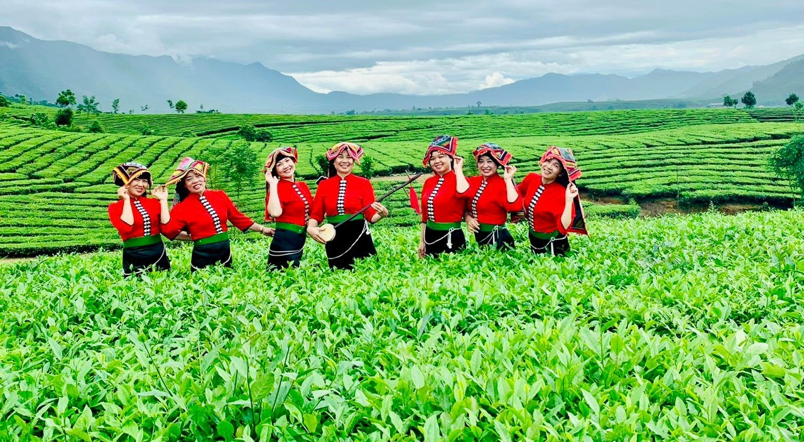
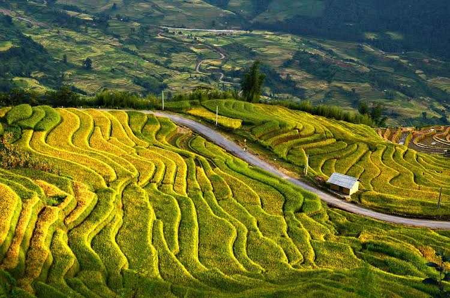
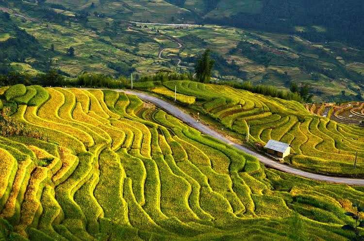
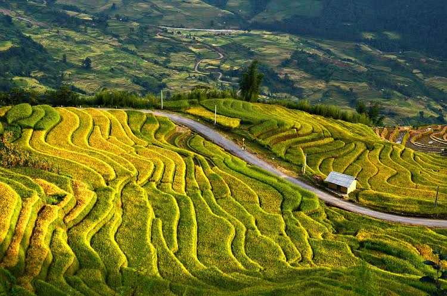

Giới thiệu
Tây Bắc – vùng đất của núi rừng hùng vĩ, những thửa ruộng bậc thang trùng điệp và bản sắc văn hoá dân tộc độc đáo. Tour Tây Bắc đưa bạn đến với Mộc Châu, Y Tý, Sa Pa… nơi vẻ đẹp thiên nhiên hoà quyện cùng sự chân chất của con người.
Đây là hành trình dành cho những ai yêu thích khám phá, trải nghiệm và muốn tìm lại sự bình yên giữa đại ngàn.
Lịch trình chi tiết
• Ngày 1: Mộc Châu – Đồi chè – Rừng thông Bản Áng • Ngày 2: Sapa – Bản Cát Cát – Nhà thờ đá – Núi Hàm Rồng • Ngày 3: Chinh phục đèo Ô Quy Hồ – Check-in ruộng bậc thang Y Tý
Hình ảnh tour

 


Đặt Tour Tây Bắc
Hãy để lại thông tin, chúng tôi sẽ liên hệ ngay cho bạn. Giá trọn gói chỉ 2.999k.